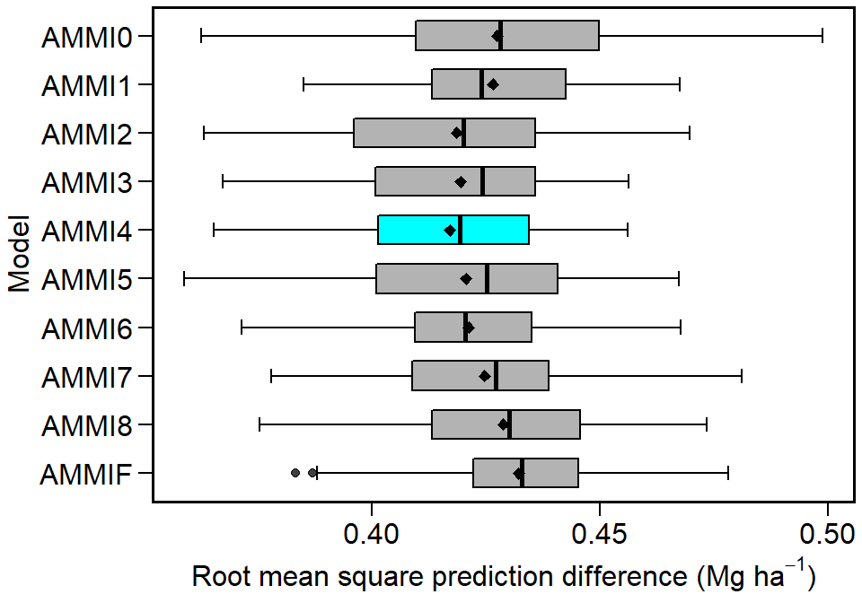
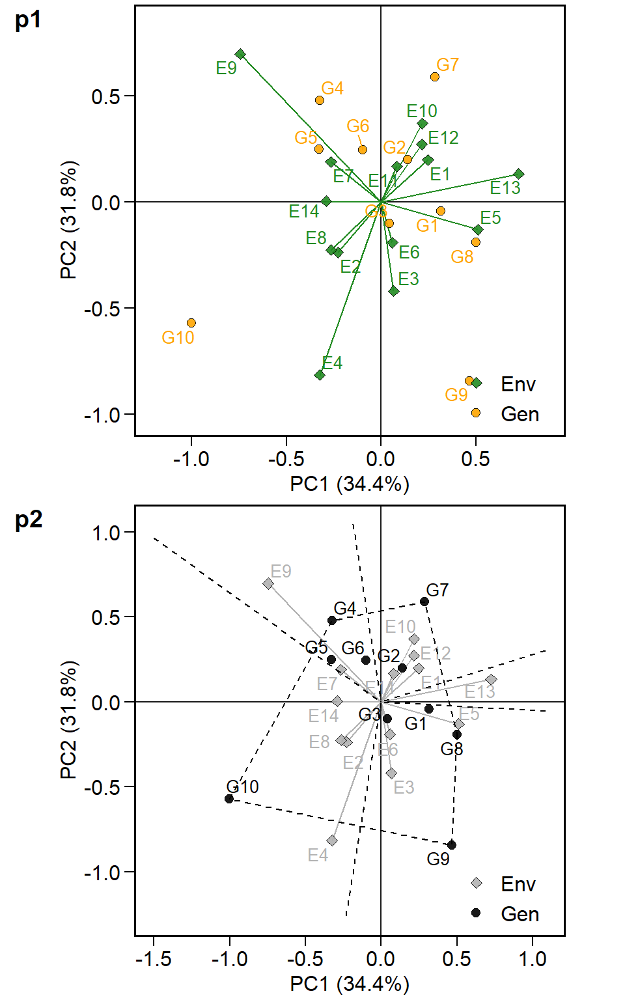
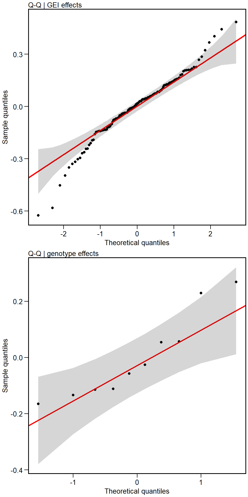

The metan (multi-environment trials analysis) package provides useful functions for analyzing multi-environment trial data using parametric and nonparametric methods, including, but not limited to Additive Main Effects and Multiplicative Interaction (AMMI) and AMMI-based indexes, Best Linear Unbiased Prediction (BLUP), and BLUP-based indexes, Joint-regression analysis, Genotypic confidence index, Superiority index, The main features include, but are not limited to:
The complete functionality of the metan package, combining theory, programming, and examples with outputs is described at https://tiagoolivoto.github.io/metan/index.html. Suggestions and criticisms to improve the quality and usability of the package are welcome!
The package kableExtra and cowplot were used to generate the tables and arranging the graphics of this vignette. The forward-pipe operators %>% and %<>% may be used in some functions, provided that the package magrittr is loaded. Brief examples will be run using the dataset data_ge that contains data on two variables assessed in 10 genotypes growing in 11 environments. For more details see ?data_ge.
library(metan)
library(cowplot) # used to arrange the graphics
library(kableExtra) # Used to make the tables
library(dplyr) # for data manipulation and pipe %>%
library(tibble) # for manipulating rownmanes
# Function to make HTML tables
print_table = function(table){
kable(table, "html", digits = 3) %>%
kable_styling(bootstrap_options = c("striped", "hover", "condensed", "responsive"), font_size = 12)
}
str(data_ge)## Classes 'tbl_df', 'tbl' and 'data.frame': 420 obs. of 5 variables:
## $ ENV: Factor w/ 14 levels "E1","E10","E11",..: 1 1 1 1 1 1 1 1 1 1 ...
## $ GEN: Factor w/ 10 levels "G1","G10","G2",..: 1 1 1 3 3 3 4 4 4 5 ...
## $ REP: Factor w/ 3 levels "1","2","3": 1 2 3 1 2 3 1 2 3 1 ...
## $ GY : num 2.17 2.5 2.43 3.21 2.93 ...
## $ HM : num 44.9 46.9 47.8 45.2 45.3 ...The cross-validation procedures implemented in the are based on the splitting of the original data into a training set and a validation set. The model is fitted using the training set and the predicted value is compared with the validation set. This process is iterated many times, say, 1000 times. The lesser the difference between predicted and validation data, the higher the predictive accuracy of the model. More information may be found here.
CVAL = cv_ammif(data_ge,
resp = GY,
gen = GEN,
env = ENV,
rep = REP,
nboot = 5,
nrepval = 2)
plot(CVAL)
The AMMI model is fitted with the function WAAS.AMMI(). Note that a model may be fitted easier and faster using %>% and assigning the arguments in the correct order (environment, genotype, replication and response(s) variable(s). For more details, please see ?WAAS.AMMI.
## Done!The well-known AMMI2 biplot may be obtained using the function plot_scores(). ggplot2-based graphics are obtained. Please, note that since WAAS.AMMI() and WAASB() functions allow analyzing multiple variables at the same time, e.g., resp = c(v1, v2, ...), the output model is a list that in this case has one element, GY.
p1 <- plot_scores(model$GY)
p2 <- plot_scores(model$GY,
type = 1,
polygon = TRUE,
col.gen = "black",
col.env = "gray70",
col.segm.env = "gray70",
axis.expand = 1.5)
plot_grid(p1, p2,
align = "v",
labels = c("p1","p2"),
ncol = 1)
predict()
The S3 method predict() is implemented for objects of class WAAS.AMMI and may be used to estimate the response of each genotype in each environment considering different number of Interaction Principal Component Axis (IPCA). As a example, we will use four IPCA (number of significant IPCAs) to estimate the GY using the previously fitted model object.
| ENV | GEN | Y | resOLS | Ypred | ResAMMI | YpredAMMI | AMMI0 |
|---|---|---|---|---|---|---|---|
| E1 | G1 | 2.366 | -0.084 | 2.450 | 0.07115484 | 2.521273 | 2.450 |
| E1 | G10 | 1.974 | -0.344 | 2.318 | -0.35391141 | 1.963751 | 2.318 |
| E1 | G2 | 2.902 | 0.311 | 2.591 | 0.29035016 | 2.880939 | 2.591 |
| E1 | G3 | 2.889 | 0.087 | 2.802 | -0.04518795 | 2.756598 | 2.802 |
| E1 | G4 | 2.589 | 0.100 | 2.488 | 0.04942370 | 2.537781 | 2.488 |
| E1 | G5 | 2.188 | -0.196 | 2.384 | -0.07091881 | 2.312867 | 2.384 |
The implementation of linear-mixed effect models to predict the response variable in MET is made with WAASB() function. The mixed-effect version of the already fitted AMMI model, where genotype and genotype-vs-environment interaction are assumed to have random effects is then obtained as follows.
## Done!The mixed-effect model fitted in model2 has many outputs. For example, we can easely obtain the Likelihood Ration Test for random effects, the variance components, and the BLUPs for genotypes as follows:
| npar | logLik | AIC | LRT | Df | Pr(>Chisq) | |
|---|---|---|---|---|---|---|
| Complete | 45 | -214.717 | 519.435 | NA | NA | NA |
| Genotype | 44 | -224.375 | 536.750 | 19.315 | 1 | 0 |
| Gen vs Env | 44 | -237.133 | 562.266 | 44.832 | 1 | 0 |
| Group | Variance |
|---|---|
| GEN | 0.028 |
| GEN:ENV | 0.057 |
| Residual | 0.097 |
| Parameters | Values |
|---|---|
| GEI variance | 0.056714 (31.26% of phenotypic variance.) |
| Genotypic variance | 0.028025 (15.45% of phenotypic variance.) |
| Residual variance | 0.096693 (53.29% of phenotypic variance.) |
| Phenotypic variance | 0.181432000765268 |
| Heritability | 0.154466820776706 |
| GEIr2 | 0.31258908175788 |
| Heribatility of means | 0.815198214388929 |
| Accuracy | 0.902883278385932 |
| rge | 0.369694636992275 |
| CVg | 6.25999359149609 |
| CVr | 11.6277882108427 |
| CV ratio | 0.53836494765692 |
| Rank | GEN | BLUPg | Predicted | LL | UL |
|---|---|---|---|---|---|
| 1 | G8 | 0.269 | 2.943 | 2.839 | 3.046 |
| 2 | G3 | 0.229 | 2.903 | 2.800 | 3.007 |
| 3 | G2 | 0.057 | 2.731 | 2.628 | 2.835 |
| 4 | G7 | 0.054 | 2.729 | 2.625 | 2.832 |
| 5 | G4 | -0.026 | 2.648 | 2.544 | 2.751 |
| 6 | G1 | -0.058 | 2.617 | 2.513 | 2.720 |
| 7 | G5 | -0.112 | 2.563 | 2.459 | 2.666 |
| 8 | G6 | -0.114 | 2.560 | 2.456 | 2.663 |
| 9 | G9 | -0.134 | 2.541 | 2.437 | 2.644 |
| 10 | G10 | -0.166 | 2.509 | 2.405 | 2.612 |
An easy way to check the results in the R console is by using the function summary()
p1 <- plot_blup(model2$GY)
p2 <- plot_blup(model2$GY,
prob = 0.1,
col.shape = c("gray20", "gray80")) + coord_flip()
plot_grid(p1, p2,
align = "v",
labels = c("p1", "p2"),
ncol = 1)
| ENV | GEN | BLUPge | BLUPg | BLUPg+ge | Predicted | LL | UL |
|---|---|---|---|---|---|---|---|
| E1 | G1 | -0.062 | -0.058 | -0.120 | 2.401 | 2.298 | 2.505 |
| E1 | G10 | -0.243 | -0.166 | -0.409 | 2.112 | 2.009 | 2.216 |
| E1 | G2 | 0.207 | 0.057 | 0.264 | 2.784 | 2.681 | 2.888 |
| E1 | G3 | 0.088 | 0.229 | 0.318 | 2.838 | 2.735 | 2.942 |
| E1 | G4 | 0.060 | -0.026 | 0.034 | 2.554 | 2.451 | 2.658 |
| E1 | G5 | -0.141 | -0.112 | -0.252 | 2.268 | 2.165 | 2.372 |
The metan package provides an easy way to compute several world-known stability methods. Up to the version 1.0.3, the following stability methods are implemented:
ge_reg()
Annicchiarico()
superiority()
ecovalence()
ge_factanal()
The easiest way to compute the above-mentioned stability indexes is by using the function ge_stats(). This function basically returns a summary of each method. If you are looking for more details from each method, like plot() and summary(), I suggest computing that methods using their own function.